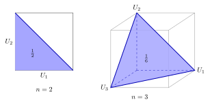

区間 [0,1] の一様乱数を 1 つずつ足していき、和が初めて 1 を超えたら止める。足した乱数の個数の期待値はいくらか。
Add random numbers drawn independently and uniformly from [0,1] one at a time, and stop as soon as the sum exceeds 1. What is the expected number of random numbers added?
e = 2.71828…
The expected number is e.
足した個数を N とします。「n 個足してもまだ止まらない」のは「n 個の和が 1 以下」のときなので
P(N > n) = P(U1 + … + Un ≤ 1)
この確率は、n 次元の立方体のうち和が 1 以下の部分の体積です。n = 2 なら三角形で 1/2、n = 3 なら三角錐で 1/6。

一般の n では、部分和 yk = U1 + … + Uk に置きかえると（体積は変わらない）、条件は 0 ≤ y1 ≤ y2 ≤ … ≤ yn ≤ 1 になります。[0,1] の n 個の数の並び方 n! 通りはどれも同じ確率なので、小さい順に並ぶ確率は 1/n!。
P(N > n) = 1/n!
0 以上の整数をとる確率変数では E[N] = Σn≥0 P(N > n) なので
E[N] = 1/0! + 1/1! + 1/2! + 1/3! + … = e
おまけ: P(N = n) = 1/(n−1)! − 1/n! = (n−1)/n!。2 個で止まる確率は 1/2、3 個は 1/3、4 個は 1/8。